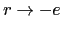
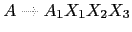
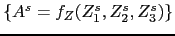

Sig: Árbol de Análisis Abstracto Sup: Análisis Sintáctico Descendente en Ant: Esquemas de Traducción Con:
En particular, es recursiva por la izquierda si contiene
una regla de producción de la forma
 .
En este caso se dice que la recursión por la izquierda es directa.
.
En este caso se dice que la recursión por la izquierda es directa.
Cuando la gramática es recursiva por la izquierda,
el método
de análisis recursivo descendente predictivo no funciona.
En ese caso, el procedimiento
A asociado con  ciclaría para siempre sin llegar a consumir ningún
terminal.
ciclaría para siempre sin llegar a consumir ningún
terminal.
Consideremos una variable  con dos producciones:
con dos producciones:
|
|
donde
no comienzan por  .
Estas dos producciones pueden ser sustituidas por:
.
Estas dos producciones pueden ser sustituidas por:
|
|
|
|
|
|
eliminando así la recursión por la izquierda.
Las producciones recursivas por la derecha dan lugar a árboles que se hunden hacia la derecha. Es mas difícil traducir desde esta clase de árboles operadores como el menos, que son asociativos a izquierdas.
|
|
{ $expr{T} = $NUM{VAL}." ".$expr[1]{T}." - "} |
|
{ $expr{T} = $NUM{VAL} }
|
{ $e{TRA} = $NUM{VAL}." ".$r{TRA} } |
|
|  | { $r{TRA} = $e{TRA}." - " } |
|
|
{ $r{TRA} = "" }
|
¿Cuál es el lenguaje generado por la gramática? ¿Puede el lenguaje ser analizado por un APDR? ¿Cual es la traducción de 4-5-6? ¿Es un esquema de traducción adecuado para traducir de infijo a postfijo? ¿Cuál es la traducción si cambiamos el anterior esquema por este otro?:
{ $e{TRA} = $NUM{VAL}." ".$r{TRA} } |
|
{ $r{TRA} = " - ".$e{TRA} } |
|
|
|
{ $r{TRA} = "" }
|
|
|
{ alpha_action } |
|
|
{ beta_action } |
|
|
{ gamma_action } |
para una sentencia como
 la secuencia de
acciones será:
la secuencia de
acciones será:
gamma_action beta_action alpha_action
¿Cómo construir un esquema de traducción para la gramática resultante de eliminar la recursión por la izquierda que ejecute las acciones asociadas en el mismo orden?. Supongamos para simplificar, que las acciones no dependen de atributos ni computan atributos, sino que actúan sobre variables globales. En tal caso, la siguiente ubicación de las acciones da lugar a que se ejecuten en el mismo orden:
{ gamma_action } |
{ beta_action } |
{ alpha_action } |
|
|
Si hay atributos en juego, la estrategia para construir un esquema de traducción equivalente para la gramática resultante de eliminar la recursividad por la izquierda se complica. Consideremos de nuevo el esquema de traducción de infijo a postfijo de expresiones aritméticas de restas:
{ $expr{T} = $expr[1]{T}." ".$NUM{VAL}." - "} |
|
{ $expr{T} = $NUM{VAL} } |
En este caso introducimos un atributo H para los nodos de la clase
 el cuál
acumula la traducción a postfijo hasta el momento. Observe como
este atributo se computa en un nodo
el cuál
acumula la traducción a postfijo hasta el momento. Observe como
este atributo se computa en un nodo  a partir del
correspondiente atributo del el padre y/o de los hermanos del nodo:
a partir del
correspondiente atributo del el padre y/o de los hermanos del nodo:
{ $r{H} = $NUM{VAL} } 
{ $expr{T} = $r{T} }

{ $r_1{H} = $r{H}." ".$NUM{VAL}." - " } 
{ $r{T} = $r_1{T} }

{ $r{T} = $r{H} }
El atributo H es un ejemplo de atributo heredado.
4 - 5 - 7.
{ $r{H} = $NUM{VAL} } 
{ $expr{T} = $r{T} }

{ $r_1{H} = $r{H}." ".$NUM{VAL}." - " } 
{ $r{T} = $r_1{T} }

{ $r{T} = $r{H} }
es posible construir un APDR que ejecuta las acciones semánticas en los puntos indicados por el esquema de traducción. El atributo heredado se convierte en un parámetro de entrada a la subrutina asociada con la variable sintáctica:
sub expression() {
my $r = $value." "; #accion intermedia
match('NUM');
return rest($r); # accion final $expr{T} = $r{T}
}
sub rest($) {
my $v = shift;
if ($lookahead eq '-') {
match('-');
my $r = "$v $value -"; # accion intermedia
match('NUM');
return rest($r); # accion final $r{t} = $r_1{t}
}
elsif ($lookahead ne 'EOI') {
error("Se esperaba un operador");
}
else { return $v; } # r -> epsilon { $r{t} = $r{h} }
}
|  | |
|  |
donde y son funciones cualesquiera.
| 0 | p
|
{ $p{t} = { n => 0, ds => $ds{t}, ss => $ss{t} } } |
| 1 | p
|
{ $p{t} = { n => 1, ss => $ss{t} } } |
| 2 | ds
|
{ $ds{t} = { n => 2, d => $d{t}, ; => ';', ds => $ds{t} } } |
| 3 | ds
|
{ $ds{t} = { n => 3, d => $d{t} ; => ';' } } |
| 4 | d
|
{ $d{t} = { n => 4, INT => 'INT', il >$il{t} } } |
| 5 | d
|
{ $d{t} = { n => 5, STRING => 'STRING', il >$il{t} } } |
| 6 | ss
|
{ $ss{t} = { n => 6, s => $s{t}, ; => ';' ss => $ss{t} } } |
| 7 | ss
|
{ $ss{t} = { n => 7, s => $s{t} } } |
| 8 | s
|
{ $s{t} = { n => 8, ID => $ID{v}, = => '=', e => $e{t} } } |
| 9 | s
|
{ $s{t} = { n => 9, P => 'P', e => $e{t} } } |
| 10 | e
|
{ $e{t} = { n => 10, e => $e1{t}, + => '+', t => $t{t} } } |
| 11 | e
|
{ $e{t} = { n => 11, e => $e1{t}, - => '-', t => $t{t} } } |
| 12 | e
|
{ $e{t} = { n => 12, t => $t{t} } } |
| 13 | t
|
{ $t{t} = { n => 13, t => $t1{t}, * => '*', f => $f{t} } } |
| 14 | t
|
{ $t{t} = { n => 14, t => $t1{t}, / => '/', f => $f{t} } } |
| 15 | t
|
{ $t{t} = { n => 15, f => $f{t} } } |
| 16 | f
|
{ $f{t} = { n => 16, ( => '(', e => $e{t}, ) => ')' } } |
| 17 | f
|
{ $f{t} = { n => 17, ID => $ID{v} } } |
| 18 | f
|
{ $f{t} = { n => 18, NUM => $NUM{v} } } |
| 19 | f
|
{ $f{t} = { n => 19, STR => $STR{v} } } |
| 20 | il
|
{ $il{t} = { n => 20, ID => $ID{v}, ',' => ',', il => $il{t} } } |
| 21 | il
|
{ $il{t} = { n => 21, ID => $ID{v} } } |
| 22 | s
|
{ $s{t} = { n => 22, s => '' }} |
Por razones de espacio hemos abreviado los nombres de las variables.
El atributo t (por tree) es una referencia a un hash.
La entrada n contiene el número de la regla en juego.
Hay una entrada por símbolo en la parte derecha. El atributo v de
ID es la cadena asociada con el identificador.
El atributo v de NUM es el valor numérico asociado con el terminal.
Se trata de, siguiendo la metodología explicada en la sección anterior,
construir un analizador descendente predictivo recursivo que sea equivalente
al esquema anterior. Elimine la recursión por la izquierda. Traslade las acciones a los
lugares convenientes en el nuevo esquema e introduzca los atributos heredados que sean necesarios.
Genere pruebas siguiendo la metodología
explicada en la sección 33.4.1. ¡Note que el árbol que debe producir
es el de la gramática inicial, ¡No el de la gramática transformada!